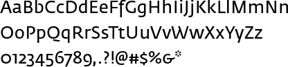
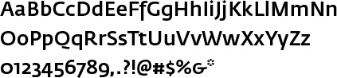
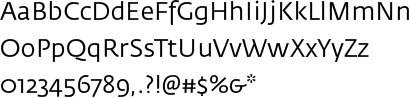
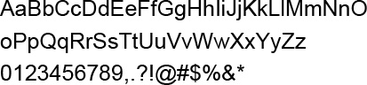
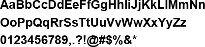

Typography
Print Fonts
Fedra Sans is the font used in the MeasureOne visual system. It is a modern typeface with a clean appearance and a distinct character. The low cap and descender heights create added legibility at small sizes. Fonts—and how we use them—make a visual impact just like the MeasureOne logo and color palette do. Always use these designated fonts when creating MeasureOne communications to maintain visual consistency.
For fonts used in digital applications, please see the Digital Fonts section below.
Fedra Sans is a font that contains many weights (light, book, normal, medium, bold, etc), but only a few are used for the MeasureOne visual system. For headlines, use Fedra Sans Medium or Fedra Sans Normal. (Substitute Fedra Sans Book for Fedra Sans Normal when Fedra Sans Normal appears too bold for very large headlines.) Fedra Sans Normal can also be used for captions. Corresponding italic weights are also allowed.
Fedra Sans Normal
Fedra Sans Medium
Fedra Sans Book
Digital Fonts
For digital applications (such as Microsoft® PowerPoint®) when Fedra Sans is not available, use Arial instead. Arial is a standard digital font that is commonly found on all computers (Mac and PC).
Arial
Arial Bold
